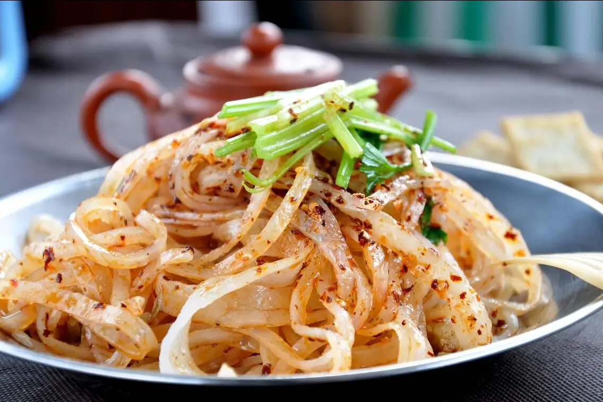

Top 3 Food in Xi'an
Roujiamo (Spiced Pork in Crispy Bun)

Introduction
Roujiamo, often called “China’s hamburger,” is Xi’an’s most famous street food—consisting of slow-cooked spiced pork stuffed into a crispy, baked wheat bun. The pork is simmered for hours in a sauce made with star anise, cinnamon, ginger, and soy sauce, until it’s tender and falls apart easily. The bun (called “mo”) is baked in a clay oven, giving it a crispy outer layer and a soft interior. The combination of savory, melt-in-your-mouth pork and crunchy bun is irresistible. You’ll find roujiamo at street stalls, small restaurants, and Muslim Street—locals eat it for breakfast, lunch, or a quick snack. It’s a must-try for anyone visiting Xi’an.
Taste
Pork: Tender, savory, and rich with spice—no fatty bits, just shredded meat that soaks up the sauce.
Bun: Crispy on the outside, soft and fluffy on the inside—slightly salty, balancing the pork’s savoriness.
Overall: Hearty, flavorful, and portable—perfect for eating on the go while exploring Xi’an.
Price
Street Stalls: 8–12 CNY/piece (standard size, with pork).
Local Restaurants: 15–20 CNY/piece (larger size, with extra pork or beef options).
Muslim Street: 10–15 CNY/piece (often served with a side of spicy pickles).
Liangpi (Cold Wheat Noodles)

Introduction
Liangpi is a refreshing Xi’an street food made with cold wheat noodles (or rice noodles) tossed in a spicy, tangy sauce. The noodles are made by steaming a wheat flour batter, then cutting it into wide strips—they’re chewy and slightly elastic. The sauce is the star: a mix of chili oil, vinegar, soy sauce, garlic water, and sesame paste, with toppings like shredded cucumber, bean sprouts, and chopped cilantro. It’s perfect for hot summer days—cool, spicy, and full of flavor. In Xi’an, every street stall has its own secret sauce recipe, so you can try different versions as you explore. It’s a cheap, tasty snack that locals love.
Taste
Noodles: Chewy, smooth, and slightly cool—absorb the sauce’s flavor well.
Sauce: Spicy (from chili oil), tangy (from vinegar), and creamy (from sesame paste)—a balanced mix of flavors.
Toppings: Shredded cucumber adds crunch, bean sprouts add freshness, and cilantro adds a hint of herbiness
Overall: Refreshing and zesty—cuts through heat and hunger, making it a go-to summer snack.
Price
Street Stalls: 6–10 CNY/bowl (standard size, wheat noodles).
Local Noodle Shops: 12–15 CNY/bowl (larger portion, with optional rice noodles or extra toppings like shredded chicken).
Muslim Street: 8–12 CNY/bowl (often served with a side of crispy fried dough sticks).
Yangrou Paomo (Lamb Soup with Broken Flatbread)

Introduction
Yangrou Paomo is a hearty, warming Xi’an staple—slow-simmered lamb soup with pieces of broken flatbread, perfect for cool winters. The soup is made by boiling lamb bones and meat with star anise, cinnamon, and ginger for 4–6 hours, resulting in a rich, milky-white broth with no gamey taste. The “paomo” part involves tearing a crispy flatbread into tiny pieces (the smaller, the better—locals say small pieces absorb more soup) and adding them to the hot broth, where they soften and soak up the lamb flavor. It’s usually served with pickled garlic (to cut through the richness) and chili oil (for extra heat). It’s not just a meal—it’s a ritual, with locals taking time to tear the bread just right before enjoying.
Taste
Soup: Rich, savory, and warm—full of lamb aroma, with a subtle hint of spices; no greasiness.
Flatbread: Crispy when dry, soft and absorbent once soaked in soup—adds texture and heartiness.
Lamb: Tender, lean, and shredded into small pieces—melts in your mouth.
Accompaniments: Pickled garlic adds tang, chili oil adds warmth—balancing the soup’s richness.
Overall: Comforting and filling—ideal for cold days or after a long day of sightseeing.
Price
Local Restaurants: 35–55 CNY/bowl (standard size, with plenty of lamb and bread).
Famous Shops (e.g., “Old Sun’s Yangrou Paomo”): 65–85 CNY/bowl (premium lamb, longer-simmered soup, and handmade flatbread).
Family-Style Eateries: 25–35 CNY/bowl (simpler version, great for a casual meal).